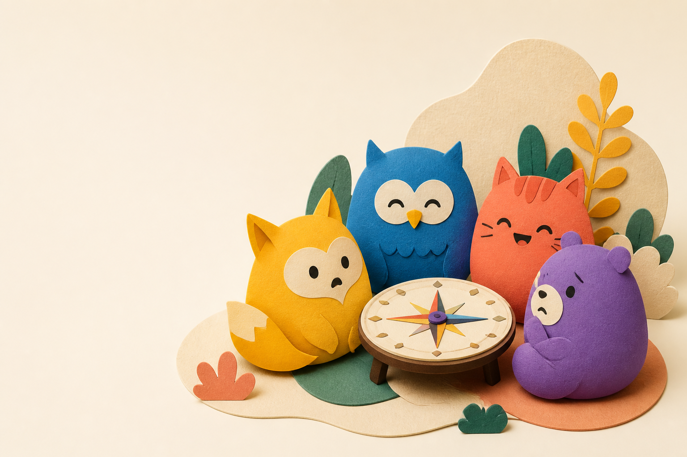
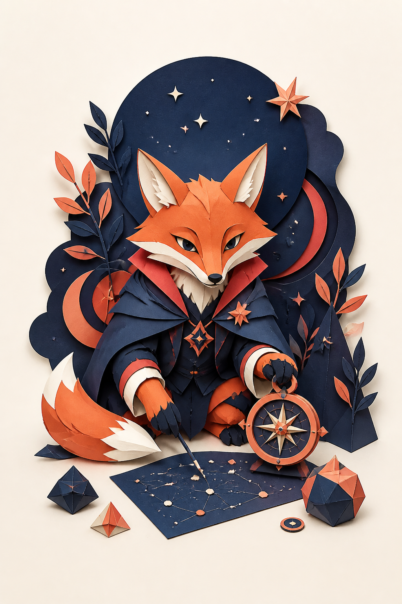

PLAYFUL PERSONALITY QUIZ
24번의 선택으로
내 플레이 모드 찾기
8문항으로 단정하지 않아요. 네 가지 선호 축을 각각 여섯 번씩 살펴보고, 선택의 결을 모아 오늘의 4글자 코드를 만들어요.
MBTI의 네 선호 축 구조를 참고한 비공식 놀이 콘텐츠입니다. 공식 검사·심리/의학적 진단·희귀도 순위가 아닙니다.

01 · 24문항같은 축을 한 번이 아닌 여섯 번 다른 장면에서
02 · 선택의 결맞고 틀림 없이, 더 자주 끌린 방향을 확인
03 · 플레이 카드코드·강점·관계 모드·오늘의 미션까지
어떤 코드가 나올까?
첫 화면에는 네 장만 미리 보여드려요. 전체 16가지는 필요할 때 열어보세요.
처음 끌리는 쪽을 골라보세요
TODAY'S PLAY CARD

오늘의 재미 미션
같은 축을 6개 장면에서 살폈지만, 이 결과는 고정 성격이나 능력·건강을 판단하지 않는 놀이용 코드입니다. 동점인 축은 가장 마지막 선택을 반영합니다.
저장·추적·공유 없이 이 브라우저 안에서만 계산됩니다.